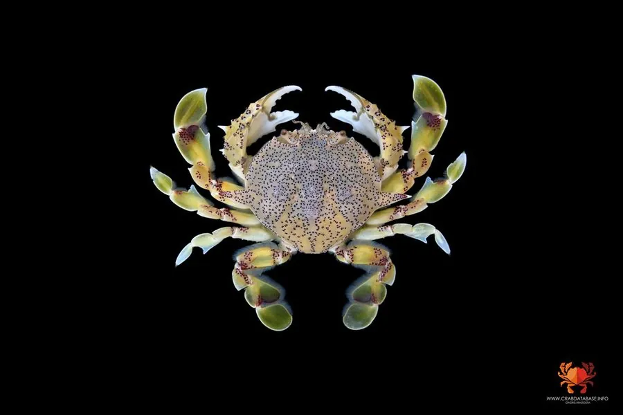

甲壳动物 · 动物界
红点黎明蟹 Matuta victor

生活在热带浅海的梭形蟹类，头胸甲有红色斑点，末对步足扁平如桨，善游泳，常埋在沙中伏击小型动物。
- 分类
- 门节肢动物门纲软甲纲目十足目科黎明蟹科属黎明蟹属
- 栖息环境
- 热带浅海沙质或沙泥底，白天埋在沙中
- 地理分布
- 中国南海、日本、东南亚和印度洋热带海域
- 保护级别
- IUCN 暂无评估；中国未列入国家重点保护名录
物种志
红点黎明蟹头胸甲宽 6–8 cm，呈横椭圆形，体色浅黄或灰白，表面散布红色斑点，边缘有锯齿；末对步足扁平如桨，适合游泳，螯足较小，指节尖锐。
它分布于中国南海、日本、东南亚和印度洋的热带浅海，栖息于沙质或沙泥底，白天埋在沙中，夜间出来捕食贝类、小鱼和底栖甲壳动物。红点黎明蟹游泳能力强，受惊时迅速钻入沙里，只露出眼睛和触角。它也是沿海常见的食用蟹，但产量不大，多作为副渔获物；红色斑点在浅色甲面上很醒目，黎明蟹科的蟹类都有类似的梭形身体和游泳足，繁殖期雌蟹抱卵，幼体浮游生活。目前 IUCN 暂无评估；中国未列入国家重点保护名录。
形态与习性
- 食性捕食贝类、小鱼和底栖甲壳动物
- 体型头胸甲宽 6–8 cm
- 识别头胸甲浅色，散布红色斑点
- 习性昼伏夜出，善游泳，常埋沙埋伏
- 繁殖雌蟹抱卵，幼体浮游生活
- 经济可食用，多为副渔获物
趣味知识
- 红点黎明蟹的甲面浅黄，上面点缀着鲜红色斑点。
- 它的最后一对步足扁平成桨，因此能在水里快速游泳。
- 白天它把自己埋进沙里，只露出眼睛和触角观察四周。